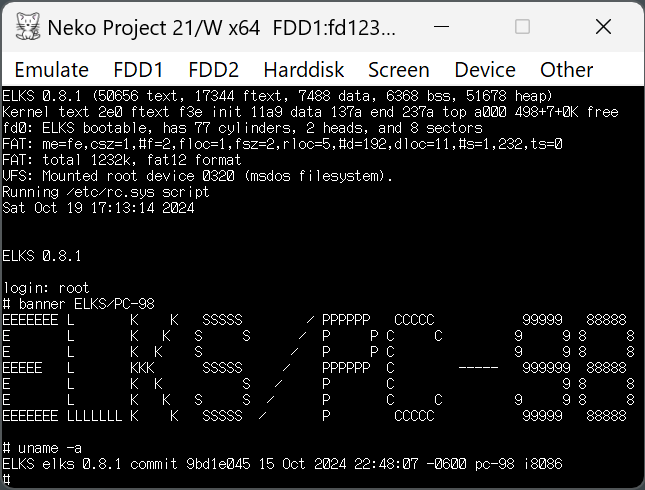

ELKS PC-98 紹介ページ
Last Update 2024/9/27
このページはEmbeddable Linux Kernel Subset (ELKS)のPC-9801/PC-9821版の使用法や開発状況を紹介していくページです。
ELKSは8086, 80286, V30等のIntel IA16アーキテクチャ向けに開発されているLinux-like OSです。
PC-9801/PC-9821は80年代から2000年代初頭にかけてNECから販売されていたパーソナルコンピュータです。
開発は以下のリポジトリで行われており、PC-98向けの機能もこちらでマージされています。
Github ELKSリポジトリ https://github.com/ghaerr/elks
動作確認済み機種
PC-9801UV21
PC-9801RX21
PC-9801BX
PC-9801NS/R (えふでぃ様調べ, commit 8cbf58e)
PC-9821Np (えふでぃ様調べ, commit 8cbf58e)
PC-9821Na12 (えふでぃ様調べ, commit 8cbf58e)
PC-98愛好会.NETの電子掲示板にエプソン PC-486SRで動作したと報告を頂きました。ありがとうございます。
PC-98愛好会.NETの電子掲示板
X(旧Twitter)にFC-9801Bとエプソン PC-386LSで動作したと報告を頂きました。ありがとうございます。
X(旧Twitter)に頂いた報告
イメージ
フロッピー向けのイメージは以下から入手できます。
2023.08の最新リリースは0.7.0です。
PC-98でシリアルコンソールやnano-Xアプリが使えるようになりました。
イメージはNeko Project 21/WやDOSBox-Xのエミュレータでそのまま読み込めます。

拡張子が.imgのため、ファイル選択で表示されない場合は全てのファイルを表示させて行ってください。
DOSBox-XではNEC PC-98エミュレーションモードを有効にしてください。
1.232MBのフロッピーに書き込む場合、
私はフリーウェアのVirtual Floppy Image Converterで.D88形式に変換してDOS/V機5.25インチにDITTで書くか、
MAHALITO形式に変換してPC-9801実機で書くか、
ELKSのddでimgをそのままPC-9801実機で書くかしています。
FDI形式に変換すればFlashFloppy化したGotek(ハードウェアFloppyエミュレータ)でも動きました。
ログイン
起動するとlogin:が現れるのでrootと入力すればログインできます。
時刻設定
日付や時刻が正しくない場合は設定ください。
現在の日付と時刻の確認はdateと打つとできます。
設定は以下のようにできます。
date -s [yy]yy-m-dTh:m:s
example) date -s 2022-09-09T02:07:00
また、以下のように打つことでRTCへの書き込みもできます。
clock -w
マウント
FAT12/16のDiskをマウントできます。
ハードディスクはSCSIとIDEに対応していますが以下の条件があります。
- SCSIとIDE合わせて4台まで
- 各Diskのパーティションは4つまで
- BIOSで正しく容量を認識できるもののみ対応 (いわゆるBIOSの壁の影響を受けます)
PC-98 IPL/PC-AT MBR形式どちらも対応していますが、
PC-98形式でMBRのパーティションも記述したような特殊なものは現状未サポートなのでマウントしないでください。
BIOSで正しく認識できないものはマウントしないでください。
なお、無保証ですので重要なデータのディスクは直接マウントしないことをお薦めします。
※注意※ ELKSはsingle FATにしか対応していないため
書き込みを行うとDOSのCHKDSK等で2つのFATが異なることによるエラーが検出されるようです。
https://github.com/ghaerr/elks/issues/1545#issuecomment-1585815121
- FDD第2ドライブのマウント方法
- mount -t msdos /dev/fd1 /mnt
- (第1,3,4ドライブをマウントする場合はfd0, fd2, fd3)
- HDD aドライブの第1パーティションをマウントする方法
- mount -t msdos /dev/hda1 /mnt
- (第2,3,4パーティションをマウントする場合はhda2,hda3,hda4)
- ディスクがhda, hdb, hdc, hddのどれに割り当てられたかは起動メッセージからご確認ください。
変更内容を確実にディスクに書き込むにはsyncを実施ください。
電源を切る前にディスクのumountを実施ください。
sync
umount /mnt
shutdown
【上級者向け】
- ハードディスクへのインストール
- あらかじめDOS等でPC-98のパーティションを作成し、FATでフォーマットしておく必要がありますが、
- fd1440-pc98.imgのフロッピーディスクを用いることでハードディスクにインストールできます。
- ※注意※fd1232-pc98.imgはブートコードが異なるのでこの方法ではインストールできません。
- HDD aドライブの第1パーティションにインストールする場合
- sys /dev/hda1
- 誤って意図しないパーティションにインストールしないようご注意ください。
- MINIXファイルシステム
- 64MBまでのMINIXファイルシステムもマウントできます。
- hda1がMINIXファイルシステムの場合
- mount /dev/hda1 /mnt
- パーティションを作成しておく必要がありますが64KBのMINIXファイルシステムは以下のコマンドで作成できます。
- PC-98では現状ブートはできません。
- mkfs /dev/hda1 65536
- MINIXファイルシステムはFATに比べてpermissionが厳密になります。
- (FATのファイルは基本誰でも読み書きできる。)
- dirty bitが立つことがあるのは仕様のようです。
- minixfsのdirty bit
- 720KB 2DD
- 1.232MB, 1.440MBの他、2023/12/29 0.8.0-dev commit 86a6061で720KB 2DDがmountできるようになりました。
- 640KBは非対応です。2HD/2DD共通ドライブのみ対応です。
- Windows 11に繋がる2モードUSBドライブでも720KB 2DDを読めるものがあるので私は最近データ移動に使っています。
- PC-9801UV21 720KBの読み込み
- Pull Request
- Dさんが3 modeドライブでの確認を行ってくださいました。ありがとうございます。
- PC-9801BXでの2DDと1.44MB
- UMB
- 何らかの方法でUMBにメモリを置くことができればdisk buffer等に使えるようです。
- UMBでのdisk buffer
アプリ / コマンド
- エディタ
vi(elvis)が使用できます。
viで起動できます。
※注意※ 現状viはFATにunused clusterを作るようです。
viのunused clusterについて
PC-98版のフロッピイメージは非常に空き容量が少ないので頻繁にファイルを編集する場合は
edit(mined)を使用した方が良いかもしれません。
この問題は2024/3 0.8.0-dev commit d740f3cで修正されたようです。
edit(mined)はedit <ファイル名>で起動できます。
ctrl-Wでファイル書き込み、ctrl-Xで終了です。
- BASIC
BASICで簡単なプログラミングができます。
PC-98向けでは一部のLIOを用いて描画できます。
basicで起動できます。
走らせたプログラムの終了はctrl-Cです。
basicの終了はctrl-Dです。
シンタックスは以下を参照ください。
save, loadのファイル名には.basを含めない点、ご注意ください。
https://github.com/ghaerr/elks/tree/master/elkscmd/basic#readme
PC-98向けのサンプルは以下にあります。MODE 1でグラフィックモードに入ります。
test98.bas
Miniゲームを作ってみました。
Micro E-Forest
エミュレータでの実行動画
エスケープシーケンスを用いてカーソルの表示、非表示を切り替えられるようになりました。
ESC[?25lとキーボードから打つと非表示になります。
ESC[?25hで表示になります。
- screen
ELKSはマルチタスクOSであるためバックグランドで処理を流せますが現状fg, bgのコマンドがありません。
2つのフォアグランドの処理を切り替えたい場合はscreenで別スクリーンを立ち上げてフォアグランドで流せば切り替えられます。
screen
Ctrl-a, cで別スクリーン
Ctrl-a, pでスクリーン切り替え
Ctrl-a, kで終了
- nano-X
nano-Xによる描画ドライバのPC-98版が入りました。
PC-98向けマウスドライバも追加しました。
以下のnano-XアプリをPC-98向けイメージには入れています。
- nxworld
- 世界地図。マウスのドラッグで拡大。右クリックで緯度経度表示。ESCで終了。
- nxlandmine
- マインゲーム。マウス必須。某ゲームと異なり開いているところに隣接したところからしか開けません。一度爆発しても続行。
- (ハードディスクにsysでインストールすると実行バイナリ名が8文字nxlandmiになるかも)
- nxtetris
- ブロックゲーム。マウス無しでも遊べます。nキーでnewゲーム。s, d, j, k, spで移動。ESCで終了。
- nxterm
- ターミナルのデモ。
以下はPC-9801BXでnxterm/nxclock/nxdemo/nxworld/nxlandmineを実行した動画です。
PC-9801BXでのnano-Xアプリ描画
PC-9801BXでマウス動作
- シリアルコンソール
/etc/inittabの先頭行を以下のように変更することでloginがシリアルポートにも出力されるようになります。
(変更前) id:1:initdefault:
(変更後) id:3:initdefault:
また、Baud Rateはs0の行の末尾に追加することで設定できます。
(1200bpsに設定) s0:2346:respawn:/bin/getty /dev/ttyS0 1200
/bootoptsのconsole=の行のコメントアウト#を外すと起動メッセージもシリアルポートに出力されるようになります。
(9600bpsで出力) console=ttyS0,9600 3
ELKSでファイルの修正を行った場合は再起動の前にsyncコマンドを実行し、確実にディスクに書き込んで下さい。
以下はPC-9801UV21にBaud Rate 1200bpsでWindowsのTera Termからログインした動画です。
PC-9801UV21にシリアルポートでログイン
- miniterm
シリアルポートのterminalです。
現状、PC-98版はシリアルポートを一つしかサポートしていないのでシリアルコンソールと併用できません。
example) miniterm -s 1200 (1200bpsでterminalを開く)
~.で終了です。
シリアルポートは8bit, パリティなし, ストップ 1bit, フロー制御なしのみ対応です。
- beep
ビープ音が鳴らせます。(2024/2 0.8.0-dev commit 1d18595で対応)
オプション
-f 周波数(Hz), 整数
-l 時間(msec), 整数
-n 続けて実行
example) beep -f1000 -l500 -n -f2000 -l1000 (1KHzで0.5秒後、2KHzで1秒)
fやlの後にはスペースを入れないで下さい。
PC-9801UV21でビープ
- fsck-dos
FAT向けcheckツールです。メモリの制約で現状フロッピーのみ対応です。(2024/3 0.8.0-dev)
- FDD第2ドライブのディスクを問いに答えながら修復
- fsck-dos /dev/fd1
- 必要な修復を自動で実行
- fsck-dos -fp /dev/fd1
※注意※ 問いにyと答えた場合や修復を自動で行った場合は即書き込まれます。
無保証ですのでご注意ください。
- sl
lsを打ち間違えると汽車が走るあれです。(2024/9 0.8.0-pre3)
sl -Fだと飛んでいきます。
sl -lだと小さくなります。
速い機種では速く、遅い機種では遅く走ります。
time slで実行時間が出るのでベンチマークにも使えるかもしれません。
- ttyclock
時計が表示されます。(0.8.0で追加)
終了はqです。
オプション
-C [1-7] 色を設定
-t 12時間formatで表示
-u UTC時間を表示
開発中
- ELKSmoria
GPL3のローグライクゲームであるUmoria 5.6を移植中です。
ELKSのアプリはcode sizeが128KB, data segment sizeが64KBまでという制約があるため
Umoria 5.6のコードを元にかなり大胆に機能を制限したものになります。
Ideas to port UMoria (Roguelike game) with elks curses
ELKSmoriaリポジトリ
Releasesに実行ファイルも置いています。
Releases
テストプレイ動画
- 漢字表示
Nano-Xを用いた簡易UTF-8 日本語テキストViewerを作りました。美咲フォントを使用しています。
nxjtxtvリポジトリ
Releasesに実行ファイルも置いています。
Releases
PC-9801UV21で実行した画像
シフトJISからUTF8に変換を行うsjis-to-utf8をELKSで使えるよう改変しました。
sjis-to-utf8 for ELKSリポジトリ
Releases
sjisutf8 sjisfile > utf8file
最新のnxjtxtvにpipeで繋いで表示することもメモリが足りればできます。
画像
sjisutf8 sjisfile | nxjtxtv
UTF8に変換してファイルに書き込んだ場合、シフトJISより大きくなります。
もし、変換途中でディスク空き容量が足りなくなり消せないブロックが出来た場合、
別ディスクで起動してfsck-dosを実行すると直せるかもしれません。
- ハイレゾ機対応
Dさんがハイレゾ機での起動対応を行って下さいました。ありがとうございます。
(現状ではコンソールは80x25ライン, グラフィックは未対応)
ハイレゾ機での起動
メモリは768KB認識できるそうです。
開発予定
- 漢字入力
- プリンタ対応
免責
ELKSやここに書かれた内容は無保証です。
記載内容を実施した結果生じたいかなる損害も当方は一切責任を負わないものとします。
謝辞
X(Twitter)等で多くの貴重なPC-98の情報を下さる方々、
いつもどうもありがとうございます。
とても参考になり、また、励みになります。
また、PC-98への対応はNeko Project 21/Wエミュレータなしではあり得ませんでした。
非常に実機再現度の高いエミュレータを作成くださり、ありがとうございます。
問い合わせ
issue:
https://github.com/ghaerr/elks/issues (日本語でも大丈夫だと思います)
X(Twitter):
https://twitter.com/tyama50
Mastodon:
https://mstdn.jp/@tyamadon501